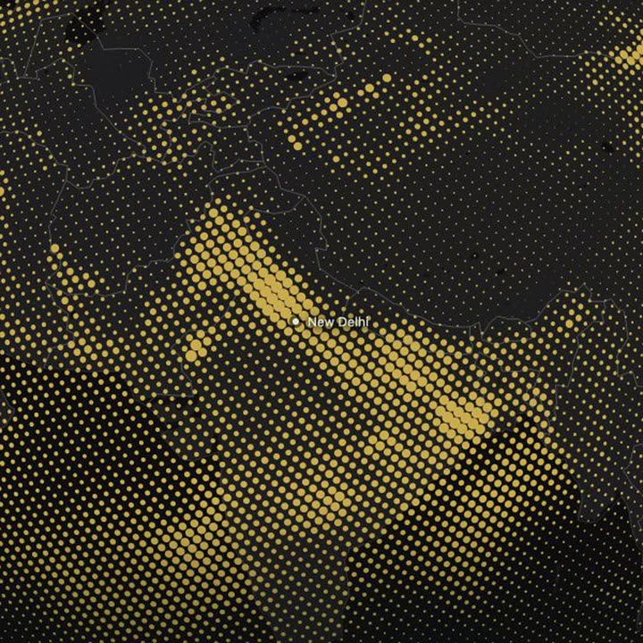

Air Atlas
What is in the air, printed as halftone ink.
PM2.5 · Dust · Formaldehyde
Krunal Prajapati · 2026
Drag to turn. Pinch or ⌘-scroll to zoom.
Air Atlas
What is in the air, printed as halftone ink.
Drag the globe to turn it, pinch to zoom. Krunal Prajapati · 2026
A lot of public data goes unseen.
The Copernicus atmospheric forecast is free to use, but it arrives as rows of numbers. Air Atlas prints the same values as ink.
As published, in µg/m³
row,latitude,longitude,pm2_5,no2,dust
267940,28.8,75.6,68.2,16.7,454.0
267941,28.8,76.0,92.2,19.0,541.0
267942,28.8,76.4,89.9,17.8,365.0
267943,28.8,76.8,86.6,23.0,276.0
267944,28.8,77.2,78.9,34.0,135.0
267945,28.8,77.6,75.9,15.7,89.0
267946,28.8,78.0,78.0,13.4,80.0
267947,28.8,78.4,62.9,12.4,88.0
267948,28.8,78.8,37.8,8.5,44.0
267949,28.8,79.2,25.7,4.4,35.0
267950,28.8,79.6,23.7,4.8,30.0
267951,28.8,80.0,21.5,5.9,21.0
267952,28.8,80.4,19.3,6.0,13.0
267953,28.8,80.8,18.8,3.9,13.0
267954,28.8,81.2,16.9,2.4,11.0
267955,28.8,81.6,13.7,1.8,7.0
405,900 rows like these, for each of 15 fields.
The same air in Air Atlas

Air Atlas
02
A lot of public data goes unseen.
The Copernicus atmospheric forecast is free to use, but it arrives as rows of numbers. Air Atlas prints the same values as ink.
Left: as published, in µg/m³. 405,900 rows like these, for each of 15 fields. Right: the same air in Air Atlas.
Halftone globe
One moment of the whole atmosphere, printed as ink on a sphere. It moves only when you drag, zoom or search.
Air Atlas
Halftone globe
One moment of the whole atmosphere, printed as ink on a sphere. It moves only when you drag, zoom or search.
A screen of dots
Concentration is dot size, misaligned just like comics to create mix of colors without actually mixing colors.
04
A screen of dots
Concentration is dot size, misaligned just like comics to create mix of colors without actually mixing colors.
Ink that mixes
Each pollutant is its own ink plate with a fixed offset. Overlaps mix the same way, whatever order you turn layers on.
Air Atlas
05
Ink that mixes
Each pollutant is its own ink plate with a fixed offset. Overlaps mix the same way, whatever order you turn layers on.
Read any point
Hover anywhere for the model values under the pointer. Click to pin it.
Air Atlas
06
Read any point
Hover anywhere for the model values under the pointer. Click to pin it.
Fly to a city
Search 237 cities offline, or type coordinates. The camera arcs around the Earth and lands on the current PM2.5 estimate.
Air Atlas
07
Fly to a city
Search 237 cities offline, or type coordinates. The camera arcs around the Earth and lands on the current PM2.5 estimate.
See it live
pkrunal26.github.io/
air-pollution-map
Modeled estimates at about 45 km, and 11 km over Europe. Not sensor readings.
Air: Copernicus Atmosphere Monitoring Service / ECMWF, via Open-Meteo, CC BY 4.0
Weather: ECMWF IFS via Open-Meteo
Earth: NASA Blue Marble Next Generation
Krunal Prajapati · 2026
See it live
pkrunal26.github.io/air-pollution-map
Modeled estimates at about 45 km, and 11 km over Europe. Not sensor readings.
Air: Copernicus Atmosphere Monitoring Service / ECMWF, via Open-Meteo, CC BY 4.0
Weather: ECMWF IFS via Open-Meteo
Earth: NASA Blue Marble Next Generation